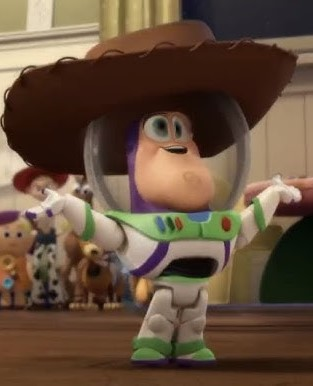

Alexandre (Xandão)

Protagonista:
Greg Heffley
Resumo:
um dilema de Greg Heffley. Chegou o dia dos namorados e um badalado
baile está por vir
Greg não tem uma companheira para levar. Mas tudo
isso pode mudar.
Seu amigo Rowley Jefferson vai empenhar para ajudá-lo a
mudar esta situação
Com um plano mirabolante, esta dupla pretende obter
sucesso com um personagem secundário.